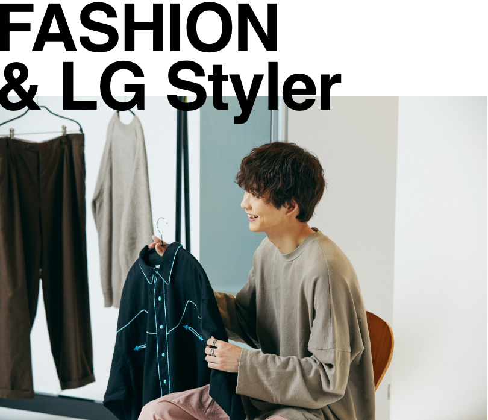

2022.07.08
映画やドラマで活躍する鈴木仁さんはメンズノンノ専属モデルでもあり、個性的な私服の30日スタイルを披露するなどファッション通としても注目を集めています。必ずショップで実物を手に取って買いものをするという鈴木さんは、年齢を重ねるにつれて上質なウェアも増えてきたそう。最近お気に入りの３スタイルとともに、LG Stylerの使い方を伺いました。
「オーバーサイズ好きの自分にしっくりきたマルニのジーンズをヘビロテしています。高校生まで没頭したサッカーのおかげで下半身の筋肉が発達していて、太いパンツを選びがちになりましたが…体のバランスが良くなった今でも、自分らしいと思えるスタイリングは変わらないものですね。このデニムは存在感のあるワイドで、トップスに何も持ってきてもキマります。ステッチワークやディティールが凝っているのもお気に入り。
去年、立ち上がったばかりの新鋭ブランドで淡いピンクのスラックスを発見しました。内側２タックのオーセンティックなデザインに、軽やかなニュアンスカラーの掛け合わせが新鮮ですよね。コットンニットも最近買ったもので、今季はこの組み合わせが定番。柔らかい印象のスタイリングをメゾン マルジェラの足袋ブーツで締めています。これからは一点ずつ「上質ないいもの」を増やしていき、末長く使いたいと思っています。
古着屋で見つけたXXLのウエスタンシャツは、今季、初挑戦のアイテムです。自分の得意なビッグシルエットだったので、着こなし幅が広がりそうだと思って購入を決定。直球でウエスタンムードのスタイリングにはせず、シックなウールパンンツで大人っぽく仕上げてました。最近のブランドだけではなく古着もチェックするのは、意外なアイテムを通して新しい自分に出会えるから。楽しみが広がります。

洋服好きの僕にとってLG Stylerがとても有難い。これまで大切な服を傷ませたくないがために、あえて着る頻度を減らすこともあったんです。毎日のようにクリーニングに出すわけにもいきませんから…。しかも最近は年齢に伴って、上質な仕立てや繊細な素材のものも増えてきた。仕事現場の長い日も、帰宅して洋服をかけるだけでリフレッシュうしてくれるのが、とても気楽です。
ウエスタンシャツは刺繍やスタッズのディティールが凝っているのでガシガシと洗濯機で回すよりもLG Stylerに入れるのが安心。ジーンズなんかも、色が抜けるし変なシワや型が付いてしまうので、洗濯機は避けたいんです。まだ使い始めたばかりですが、ふんわりした仕上がりに大満足で、今後は愛する洋服たちをLG Stylerでケアしていきます。

1999年生まれ。東京都県出身。2016年「第31回メンズノンノモデルオーディション」で準グランプリを受賞し、モデルとして活躍。2017年、ドラマ「リバース」（TBS）で俳優としてもデビューし、主な出演作に、ドラマ「花のち晴れ～花男 Next Season～」TBS、映画「4月の君、スピカ。」、「小さな恋のうた」、「のぼる小寺さん」。
Interview CATAL DESIGN